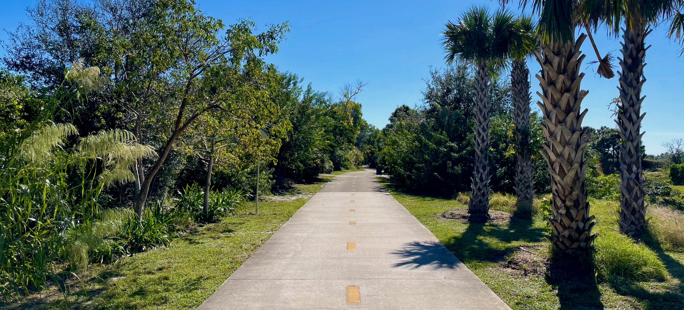
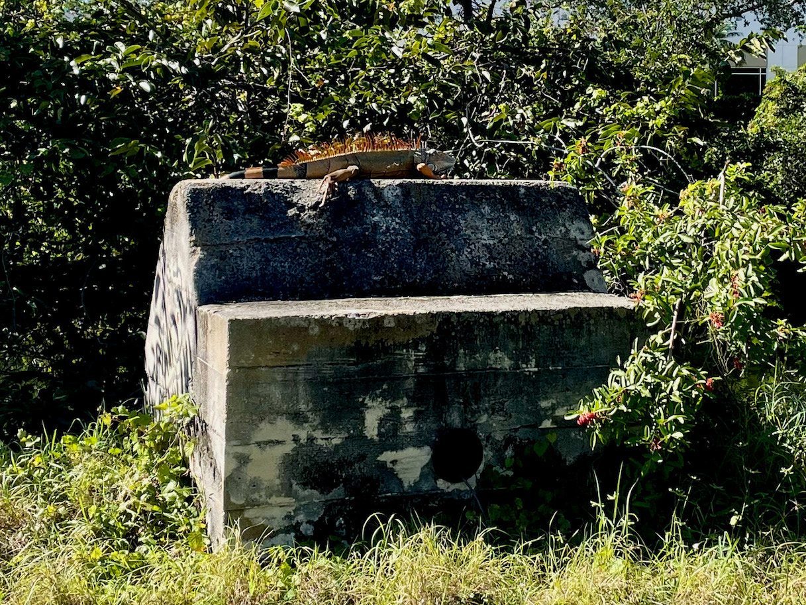

El Rio Trail
December 1, 2020 • 4.8 miles
This was a perfect ride. The weather was perfect: clear sunny sky, temperature in the high 60s, only the slightest breeze. The trail conditions were perfect: smooth pavement, always set far back from roads, with not many other people out and about. It was made even better that this was my first ride out with new tiny shock pads, which cut way down on board rattle. I didn’t put on headphones, I simply kicked, pushed, and carved.
A canal of the same name runs parallel to the trail through a variety of Boca Raton sights. Sometimes you’re sandwiched between a canal and the backyard of a condo building, sometimes you’re up against FAU open space with big campus buildings in the background. There are golf courses too, obviously. The trail pavement itself was always in good condition, with plenty of signage in case you somehow got lost maintaining a straight-ahead course. Giant green iguanas were often sunning themselves by the side of the path, then scurried away when I approached. There were some even bigger iguanas, orange instead, watching from a safe distance where scampering was unnecessary.
The trail was built in two stages, starting in 2008 and finishing in 2017. Some of the final segments were underpasses beneath the 95 and other busy roads. These were exciting to whoosh under, letting the increased speed of the downhill approach carry me through the cold wet underground air — the canal continued alongside through this underpass, naturally. It all brought back the feeling of coming down A1A in northern Florida. The trail was over too soon, ending unceremoniously at a major road leading into campus. I was plenty happy to turn around and experience it again, even with a mild headwind this time.